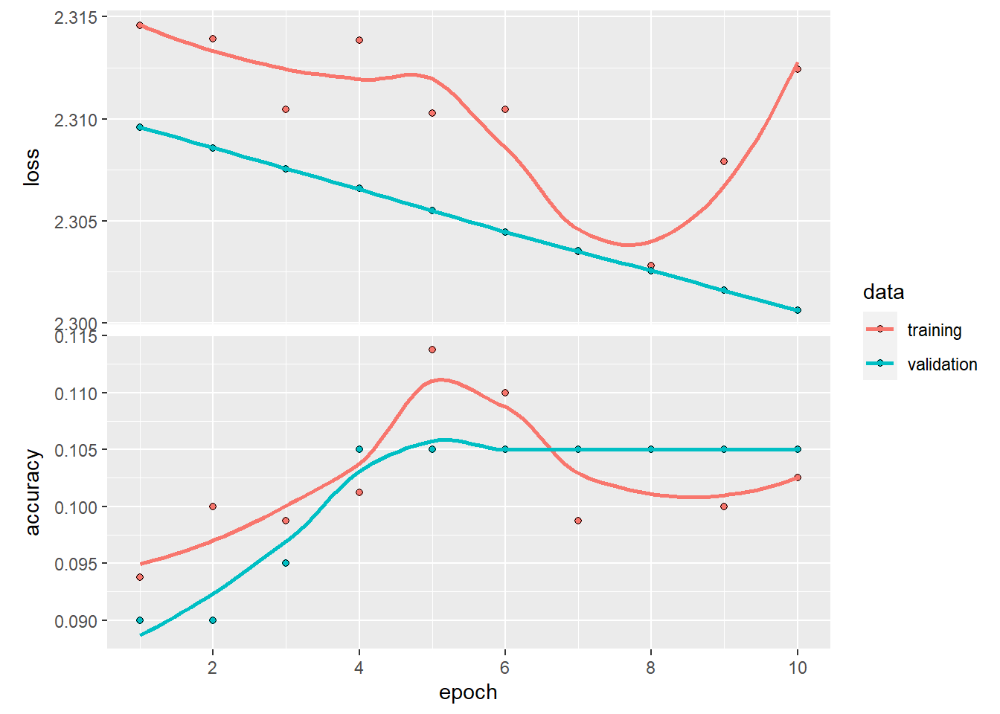
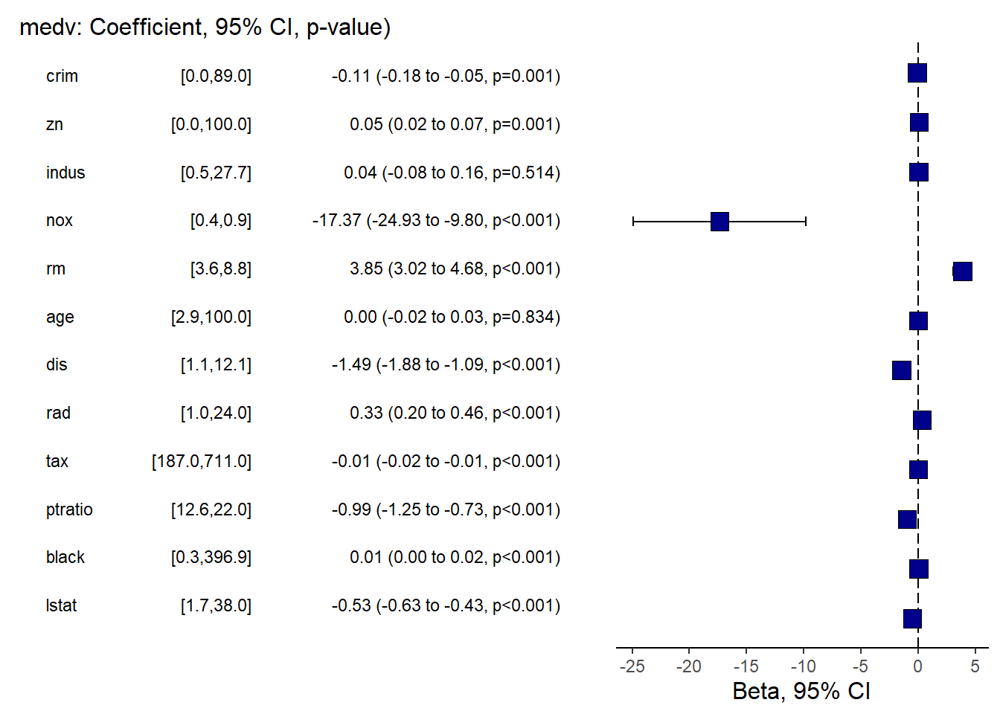
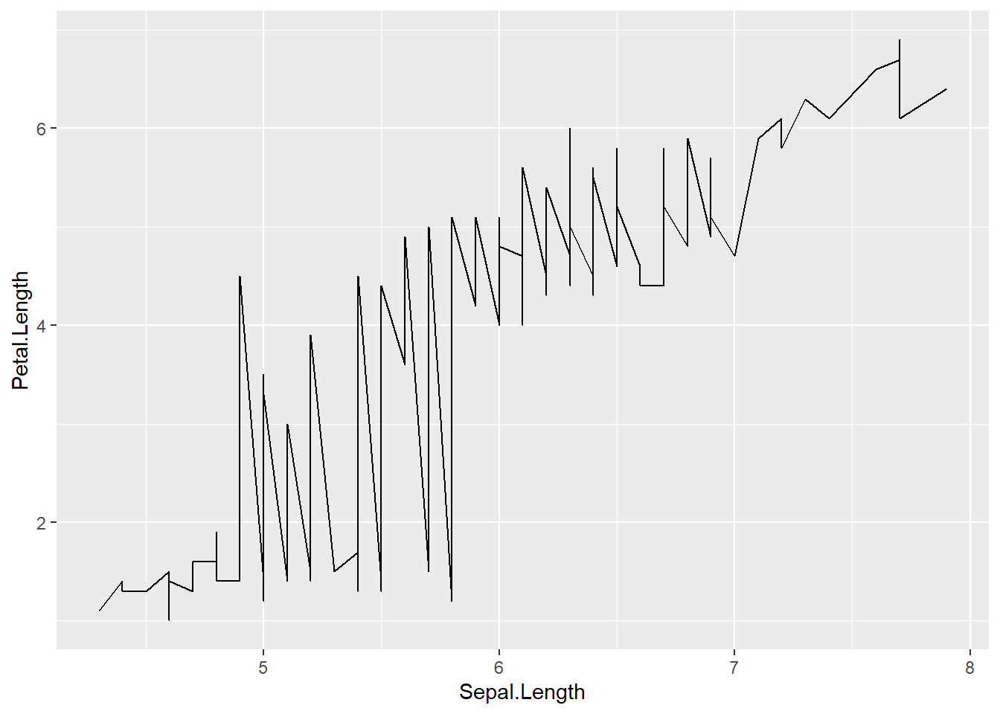
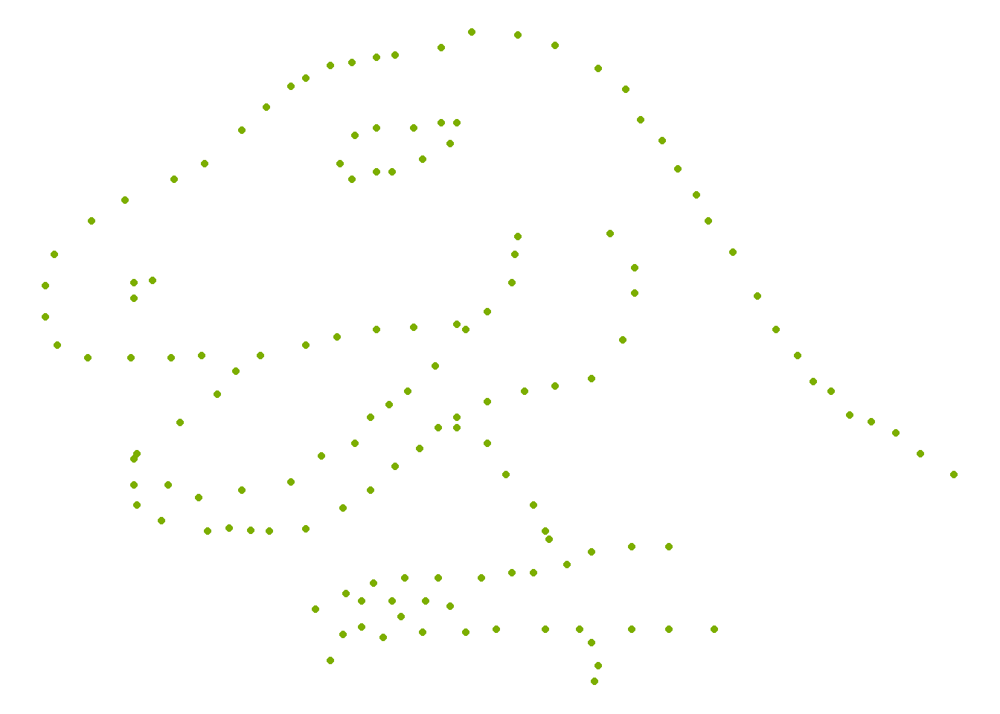
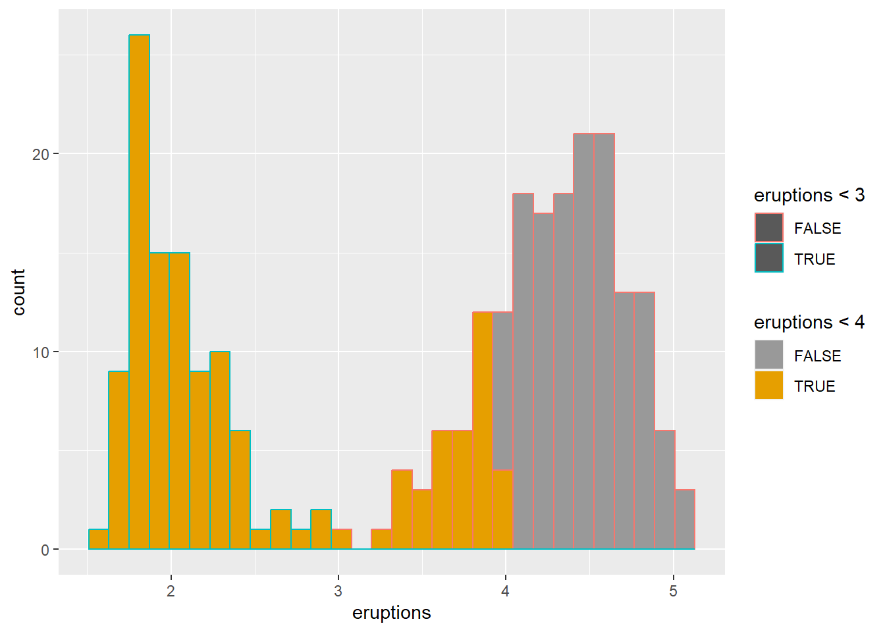
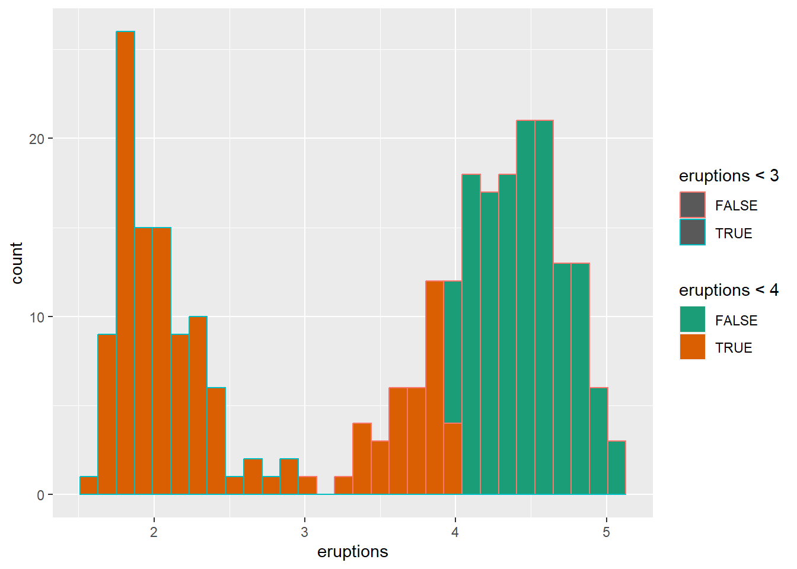

4 Data visualization
4.1 Data visualization introduction
4.1.1 Summarization
library(tidyverse)
library(dplyr)
mtcars %>%
mutate( kml = mpg * 0.42) %>%
group_by(cyl) %>%
summarise(avg_US = mean(mpg), avg_metric = mean(kml))## # A tibble: 3 × 3
## cyl avg_US avg_metric
## <dbl> <dbl> <dbl>
## 1 4 26.7 11.2
## 2 6 19.7 8.29
## 3 8 15.1 6.34mpg %>%
group_by(manufacturer, year) %>%
summarise_at(vars(cty, hwy), mean)## # A tibble: 30 × 4
## # Groups: manufacturer [15]
## manufacturer year cty hwy
## <chr> <int> <dbl> <dbl>
## 1 audi 1999 17.1 26.1
## 2 audi 2008 18.1 26.8
## 3 chevrolet 1999 15.1 21.6
## 4 chevrolet 2008 14.9 22.1
## 5 dodge 1999 13.4 18.4
## 6 dodge 2008 13.0 17.6
## 7 ford 1999 13.9 18.6
## 8 ford 2008 14.1 20.5
## 9 honda 1999 24.8 31.6
## 10 honda 2008 24 33.8
## # … with 20 more rows- change layout
mpg %>% count(class, year)%>%
spread(class, n) ## # A tibble: 2 × 8
## year `2seater` compact midsize minivan pickup subcompact suv
## <int> <int> <int> <int> <int> <int> <int> <int>
## 1 1999 2 25 20 6 16 19 29
## 2 2008 3 22 21 5 17 16 33- change all characters into factors
mpg <- mpg %>%
mutate_if(is.character, as.factor) #if a column is a character, change to a factor- wide to long data
mpg1 <- mpg %>%
gather("key", "value", cty, hwy)- convert wide data to long data using
pivot_longer
## Your code here. Naming choices for 1 and 2 are yours
dta <- mpg %>%
pivot_longer(cty:hwy, names_to = "var", values_to = "value") %>% # Both of those are
# value label
mutate(var = ifelse( var == 'cty', 'city','highway'))
ggplot(dta, aes(x = displ, y = value)) +
geom_point(aes(color = var)) +
geom_smooth(aes(color = var), se = F)## `geom_smooth()` using method = 'loess' and formula 'y ~ x'
- explore distribution
library(DataExplorer)
library(psych)##
## Attaching package: 'psych'## The following object is masked from 'package:Hmisc':
##
## describe## The following object is masked from 'package:plotrix':
##
## rescale## The following objects are masked from 'package:ggplot2':
##
## %+%, alphalibrary(naniar)##
## Attaching package: 'naniar'## The following object is masked from 'package:skimr':
##
## n_completeplot_histogram(riskfactors)
- explore relationship/correlation
library(psych)
pairs.panels(riskfactors[,1:10])
- create a individual theme
my_theme <- function(){
theme_bw() +
theme(axis.title = element_text(size=16),
axis.text = element_text(size=14),
text = element_text(size = 14))
}4.1.2 Explore missing values
# install.packages("naniar")
library(naniar)
# head(riskfactors)
riskfactors <- riskfactorsgg_miss_upset(riskfactors,nsets=10)# install.packages("DataExplorer")
plot_missing(riskfactors)
# take a quick look at the data types of each column
visdat::vis_dat(riskfactors)4.1.3 Add statistical test
library(ggpubr)
plt <- ggplot( data=mpg,
mapping= aes(x = as.factor(year),
y = cty,
color = as.factor(year) ) )+
geom_boxplot() +
geom_jitter(width=0.1)+
labs(x = 'Year',
y = "City mpg") +
my_theme()+ facet_wrap( ~ manufacturer,nrow = 2)
# add statistical test
my_comparisons <- list(c('1999','2008'))
plt + stat_compare_means() +
stat_compare_means(comparisons = my_comparisons)
4.1.4 Add texts to dots
USArrests <- USArrests %>% rownames_to_column('State')
ggplot(USArrests, aes(
x=UrbanPop,y=Murder))+
geom_point() +
labs(x = "Percent of population that is urban",
y = "Murder arrests (per 100,000)",
caption = "McNeil (1997). Interactive Data Analysis")+
geom_text(aes(label=State),size=3)4.1.5 Set the legend
ggplot(iris, aes(x= Sepal.Length , fill= as.factor( Species)) ) + #whole plot's option
geom_histogram(aes(y=..density..),alpha=0.5, position="identity" , bins = 50)+
geom_density(aes(linetype=as.factor(Species)),alpha=.1 )+ #aesthetic's option
scale_fill_manual( name = "Groups",values = c("grey", "black", "skyblue"),labels = c("setosa", "versicolor" , "virginica" ))+
scale_linetype_manual( name = "Groups" ,values = c(1,3,5),labels = c("setosa", "versicolor" , "virginica") )+ # common legend
labs(x = "Sepal.Length",
y = "Density",
title = "") 
4.1.6 Create a panel of plots
- combine multiple plots into one
p1=ggplot(data=riskfactors,aes(x=age))+
geom_histogram(bins = 30 )
p2=ggplot(data=riskfactors,aes(x=sex))+
geom_bar (aes(x=sex) )
p3=ggplot(riskfactors,aes(x = education, y = bmi))+
geom_boxplot ( )
p4=ggplot(riskfactors, aes(x = marital )) +
geom_bar(aes(group = education, y = (..count..)/sum(..count..),fill = education)) +
scale_y_continuous(labels=scales::percent)
# install.packages("ggpubr")
library(ggpubr)
ggarrange(p1, p2, p3, p4, ncol = 2, nrow=2)4.1.7 Plots in regression
- create linear regression model
data("Boston", package = "MASS")
linear_reg <- glm(medv ~ ., data=Boston , family = gaussian())
summary(linear_reg)##
## Call:
## glm(formula = medv ~ ., family = gaussian(), data = Boston)
##
## Deviance Residuals:
## Min 1Q Median 3Q Max
## -15.595 -2.730 -0.518 1.777 26.199
##
## Coefficients:
## Estimate Std. Error t value Pr(>|t|)
## (Intercept) 3.646e+01 5.103e+00 7.144 3.28e-12 ***
## crim -1.080e-01 3.286e-02 -3.287 0.001087 **
## zn 4.642e-02 1.373e-02 3.382 0.000778 ***
## indus 2.056e-02 6.150e-02 0.334 0.738288
## chas 2.687e+00 8.616e-01 3.118 0.001925 **
## nox -1.777e+01 3.820e+00 -4.651 4.25e-06 ***
## rm 3.810e+00 4.179e-01 9.116 < 2e-16 ***
## age 6.922e-04 1.321e-02 0.052 0.958229
## dis -1.476e+00 1.995e-01 -7.398 6.01e-13 ***
## rad 3.060e-01 6.635e-02 4.613 5.07e-06 ***
## tax -1.233e-02 3.760e-03 -3.280 0.001112 **
## ptratio -9.527e-01 1.308e-01 -7.283 1.31e-12 ***
## black 9.312e-03 2.686e-03 3.467 0.000573 ***
## lstat -5.248e-01 5.072e-02 -10.347 < 2e-16 ***
## ---
## Signif. codes: 0 '***' 0.001 '**' 0.01 '*' 0.05 '.' 0.1 ' ' 1
##
## (Dispersion parameter for gaussian family taken to be 22.51785)
##
## Null deviance: 42716 on 505 degrees of freedom
## Residual deviance: 11079 on 492 degrees of freedom
## AIC: 3027.6
##
## Number of Fisher Scoring iterations: 2- summary
knitr::kable(broom::tidy(linear_reg))| term | estimate | std.error | statistic | p.value |
|---|---|---|---|---|
| (Intercept) | 36.4594884 | 5.1034588 | 7.1440742 | 0.0000000 |
| crim | -0.1080114 | 0.0328650 | -3.2865169 | 0.0010868 |
| zn | 0.0464205 | 0.0137275 | 3.3815763 | 0.0007781 |
| indus | 0.0205586 | 0.0614957 | 0.3343100 | 0.7382881 |
| chas | 2.6867338 | 0.8615798 | 3.1183809 | 0.0019250 |
| nox | -17.7666112 | 3.8197437 | -4.6512574 | 0.0000042 |
| rm | 3.8098652 | 0.4179253 | 9.1161402 | 0.0000000 |
| age | 0.0006922 | 0.0132098 | 0.0524024 | 0.9582293 |
| dis | -1.4755668 | 0.1994547 | -7.3980036 | 0.0000000 |
| rad | 0.3060495 | 0.0663464 | 4.6128998 | 0.0000051 |
| tax | -0.0123346 | 0.0037605 | -3.2800091 | 0.0011116 |
| ptratio | -0.9527472 | 0.1308268 | -7.2825106 | 0.0000000 |
| black | 0.0093117 | 0.0026860 | 3.4667926 | 0.0005729 |
| lstat | -0.5247584 | 0.0507153 | -10.3471458 | 0.0000000 |
- create logistical regression
# load the Pima Indians dataset from the mlbench dataset
library(mlbench)
data(PimaIndiansDiabetes)
# rename dataset to have shorter name because lazy
diabetes <- PimaIndiansDiabetes
logistic_reg <- glm(diabetes ~ ., data=diabetes, family = binomial)
summary(logistic_reg)##
## Call:
## glm(formula = diabetes ~ ., family = binomial, data = diabetes)
##
## Deviance Residuals:
## Min 1Q Median 3Q Max
## -2.5566 -0.7274 -0.4159 0.7267 2.9297
##
## Coefficients:
## Estimate Std. Error z value Pr(>|z|)
## (Intercept) -8.4046964 0.7166359 -11.728 < 2e-16 ***
## pregnant 0.1231823 0.0320776 3.840 0.000123 ***
## glucose 0.0351637 0.0037087 9.481 < 2e-16 ***
## pressure -0.0132955 0.0052336 -2.540 0.011072 *
## triceps 0.0006190 0.0068994 0.090 0.928515
## insulin -0.0011917 0.0009012 -1.322 0.186065
## mass 0.0897010 0.0150876 5.945 2.76e-09 ***
## pedigree 0.9451797 0.2991475 3.160 0.001580 **
## age 0.0148690 0.0093348 1.593 0.111192
## ---
## Signif. codes: 0 '***' 0.001 '**' 0.01 '*' 0.05 '.' 0.1 ' ' 1
##
## (Dispersion parameter for binomial family taken to be 1)
##
## Null deviance: 993.48 on 767 degrees of freedom
## Residual deviance: 723.45 on 759 degrees of freedom
## AIC: 741.45
##
## Number of Fisher Scoring iterations: 5- summary
knitr::kable(broom::tidy(logistic_reg))| term | estimate | std.error | statistic | p.value |
|---|---|---|---|---|
| (Intercept) | -8.4046964 | 0.7166359 | -11.7279870 | 0.0000000 |
| pregnant | 0.1231823 | 0.0320776 | 3.8401403 | 0.0001230 |
| glucose | 0.0351637 | 0.0037087 | 9.4813935 | 0.0000000 |
| pressure | -0.0132955 | 0.0052336 | -2.5404160 | 0.0110721 |
| triceps | 0.0006190 | 0.0068994 | 0.0897131 | 0.9285152 |
| insulin | -0.0011917 | 0.0009012 | -1.3223094 | 0.1860652 |
| mass | 0.0897010 | 0.0150876 | 5.9453340 | 0.0000000 |
| pedigree | 0.9451797 | 0.2991475 | 3.1595780 | 0.0015800 |
| age | 0.0148690 | 0.0093348 | 1.5928584 | 0.1111920 |
4.1.7.1 Create forest plots for coefficients or OR
library(sjPlot)## Registered S3 methods overwritten by 'effectsize':
## method from
## standardize.Surv datawizard
## standardize.bcplm datawizard
## standardize.clm2 datawizard
## standardize.default datawizard
## standardize.mediate datawizard
## standardize.wbgee datawizard
## standardize.wbm datawizard## #refugeeswelcomeplot_model(linear_reg, show.values = TRUE, value.offset = 0.5)
plot_model(logistic_reg, show.values = TRUE, value.offset = .5, vline.color = "black") another way
another way
library(finalfit)
explanatory = c( "crim" , "zn" , "indus" , "nox" , "rm" , "age" , "dis" , "rad" , "tax" ,"ptratio" ,"black" , "lstat" )
dependent = "medv"
Boston %>%
coefficient_plot(dependent, explanatory, table_text_size=3,
title_text_size=12,
plot_opts=list(xlab("Beta, 95% CI"),
theme(axis.title = element_text(size=12))))
library(finalfit)
explanatory = c( "pregnant", "glucose" , "pressure", "triceps" ,"insulin" , "mass" , "pedigree", "age" )
dependent = "diabetes"
diabetes %>%
or_plot(dependent, explanatory, table_text_size=3,
title_text_size=12,
plot_opts=list(xlab("OR, 95% CI"),
theme(axis.title = element_text(size=12))))## Waiting for profiling to be done...
## Waiting for profiling to be done...
## Waiting for profiling to be done...
- qq plot
ggqqplot( (Boston$medv))
- Loading data set
library(printr)## Registered S3 method overwritten by 'printr':
## method from
## knit_print.data.frame rmarkdownlibrary(tidyverse)
head(iris)| Sepal.Length | Sepal.Width | Petal.Length | Petal.Width | Species |
|---|---|---|---|---|
| 5.1 | 3.5 | 1.4 | 0.2 | setosa |
| 4.9 | 3.0 | 1.4 | 0.2 | setosa |
| 4.7 | 3.2 | 1.3 | 0.2 | setosa |
| 4.6 | 3.1 | 1.5 | 0.2 | setosa |
| 5.0 | 3.6 | 1.4 | 0.2 | setosa |
| 5.4 | 3.9 | 1.7 | 0.4 | setosa |
4.2 Scatter plot
4.2.1 Create a empty canvas
- then create
aesthetic mapping
- tell the function which dataset and variables to use
ggplot(data = iris, # which data set? canvas?
aes(x=Sepal.Length , y=Petal.Length )) # which variables as aesthetics? x and y are mapped to columns of the data; different geoms can have different aesthetics (different variables). 
4.2.2 Add a layer/geom of points to the canvas
ggplot(data = iris,
mapping = aes(x=Sepal.Length , y=Petal.Length )) +
geom_point() # adding the geometrical representation 
# same plot as above
ggplot(data = iris) +
geom_point( aes(x=Sepal.Length , y=Petal.Length )) 4.2.3 Add another aesthetic
- add a curve/straight line to fit these points
- geom provides the aesthetic to ggplot
# Loess curve
ggplot(data = iris,
mapping = aes(x=Sepal.Length , y=Petal.Length )) +
geom_point() +
geom_smooth() ## `geom_smooth()` using method = 'loess' and formula 'y ~ x'
# Linear regression line
ggplot(data = iris,
mapping = aes(x=Sepal.Length , y=Petal.Length)) +
geom_point() +
geom_smooth(method = "lm")## `geom_smooth()` using formula 'y ~ x'
4.2.4 Add other aesthetic
- set other aesthetics
colour, alpha (transparency), and size of points
ggplot(data = iris) +
geom_point(aes(x=Sepal.Length , y=Petal.Length, size = Sepal.Width ),
alpha = .5,
colour = "red")
ggplot(data = iris) +
geom_point(aes(x=Sepal.Length , y=Petal.Length, size = Sepal.Width , colour=Species), #white is a variable here
alpha=.9)
- categorize
Petal.Widththen map colour to this new variable
iris <- iris %>%
mutate(growth = ifelse(Petal.Width > 1.5, "Wide", "Normal"))
ggplot(data=iris) +
geom_point(aes(x=Sepal.Length , y=Petal.Length, size = Sepal.Width , colour=growth),
alpha=.9)4.3 Bar chart
ggplot(data = iris) +
geom_bar(aes(x = growth))
- bar chart after
group_by - then use
stat='identity'
library(dplyr)
results <- iris %>%
group_by(Species, growth) %>%
summarise(Sepal.Length.mean=mean (Sepal.Length ))## `summarise()` has grouped output by 'Species'. You can override using the
## `.groups` argument. gop <- results %>%
filter(Species != "setosa_null" )
gop## # A tibble: 5 × 3
## # Groups: Species [3]
## Species growth Sepal.Length.mean
## <fct> <chr> <dbl>
## 1 setosa Normal 5.01
## 2 versicolor Normal 5.91
## 3 versicolor Wide 6.18
## 4 virginica Normal 6.13
## 5 virginica Wide 6.62- though meaningless below until line chart (just use the mean as the sum for demonstration)
# We can also store parts of a plot in an object
plot1 <- ggplot(gop) +
geom_bar(aes(x=growth , y=Sepal.Length.mean),
stat='identity')
plot1 ### Add some options for the whole ggplot rather than layers
-
### Add some options for the whole ggplot rather than layers
- switch the x and y axes
plot1 +
coord_flip()
reorderx categories (-means descending)
ggplot( gop) +
geom_bar(aes(x=reorder(growth, -Sepal.Length.mean), y=Sepal.Length.mean, fill=growth),
stat='identity') +
coord_flip()- add x axis
labeland atheme
ggplot(gop) +
geom_bar(aes(x=reorder(growth, -Sepal.Length.mean), y=Sepal.Length.mean, fill=growth),
stat='identity') +
coord_flip() +
xlab("Growth categories") +
guides(fill=F) +
theme_minimal()
- set theme
library(ggthemes)
ggplot(data = iris) +
geom_bar(aes(x = growth)) +
theme_economist()
4.3.1 Grouped bar chart
-bar chart with different panels
ggplot(mpg, aes(x = class)) +
geom_bar() +
facet_wrap( ~ year)- actual number (groups are stacked by default)
ggplot(gop) +
geom_bar(aes(x=growth, y=Sepal.Length.mean, fill=Species)
, stat='identity'
)
ggplot(mpg, aes(x = class )) +
geom_bar(aes(group = year, fill = year), position = "stack")
- percentage
ggplot(gop) +
geom_bar(aes(x=growth, y=Sepal.Length.mean, fill=Species),
stat='identity',
position='fill')
- groups are dodge with
actual number
ggplot(gop) +
geom_bar(aes(x=growth, y=Sepal.Length.mean, fill=Species),
stat='identity',
position='dodge') - groups are dodge with
- groups are dodge with percentage
gop2 <- gop %>%
group_by(growth ) %>%
mutate(Sepal.Length.prop=Sepal.Length.mean/sum(Sepal.Length.mean))
ggplot(gop2) +
geom_bar(aes(x=growth, y=Sepal.Length.prop, fill=Species),
stat='identity',
position='dodge') +
ylab("Votes (%)")
4.4 Line charts
ggplot(iris) +
geom_line(aes(x=Sepal.Length , y=Petal.Length))
4.4.1 Grouped by colour variable
ggplot(iris) +
geom_line(aes(x=Sepal.Length , y=Petal.Length, colour = Species))
- grouped by state then set how many rows or columns
ggplot(iris) +
geom_line(aes(x=Sepal.Length , y=Petal.Length) ) +
facet_wrap(~Species, nrow = 1) + #set how many rows
coord_flip() 4.4.2 Multiple aesthetics
iris <- iris %>%
mutate(growth = ifelse(Petal.Width > 1.5, "Wide", "Normal"))
ggplot(iris, aes(x = Sepal.Length, y = Petal.Length)) +
geom_line(size=2,color="purple")+
# number format
scale_x_log10(labels = scales::label_number())+
geom_point( aes(size = Sepal.Length,colour = as.factor(growth)),show.legend = F)+
facet_wrap(~ Species) 
4.5 ggplot2 parameters
For detail, please read this article and this one.
library(datasauRus)
ggplot( )+
geom_point(data=datasaurus_dozen[datasaurus_dozen$dataset=="dino",], aes(x = x, y = y),color= "#7CAE00" ) +
theme_void()+
theme(legend.position = "none") 
4.5.1 Components of plot
- Components of plot
- Data: is a data frame
- Aesthetics: is used to indicate x and y variables and to control the color, the size or the shape …
- Geometry: the type of graphics (bar plot, line plot, scatter plot…)
- adjust parameters
- adjust legend using
guide_
- adjust color, size, and shape using
scale_,guide_can further adjustscale_ - adjust panel, background, axis (font, color, size, angle), title, legend (position), caption using theme
- adjust legend using
- types of plots
- geom_boxplot(): Box plot
- geom_violin(): Violin plot
- geom_dotplot(): Dot plot
- geom_jitter(): Jitter charts
- geom_line(): Line plot
- geom_bar(): Bar plot
- geom_errorbar(): Error bars
- geom_point(): Scatter plot
- geom_smooth(): Add smoothed curve
- geom_quantile(): Add quantile lines
- geom_text(): Textual annotations
- geom_density(): Create a smooth density curve
- geom_histogram(): Histogram
example
data("faithful")
# Basic scatterplot
ggplot(data = faithful,
mapping = aes(x = eruptions, y = waiting)) +
geom_point()+
stat_density_2d(aes(fill = ..level..), geom="polygon") 
# Data and mapping can be given both as global (in ggplot()) or per layer
# ggplot() +
# geom_point(mapping = aes(x = eruptions, y = waiting),
# data = faithful)4.5.2 Create main title, axis labels, caption
pay attention whether argument is factor or continuous.
ggplot(data = faithful,
mapping = aes(x = eruptions, y = waiting)) +
geom_point()+
labs(title = "Number of xxx",
caption = "source: http://xxx",
x = "Eruptions" ,
y = "Waiting time" ) +
# customize title, axis, caption
theme(
plot.title = element_text(color="red", size=14, face="bold.italic"),
plot.caption = element_text(color="red", size=10, face="italic"),
axis.title.x = element_text(color="blue", size=14, face="bold"),
axis.title.y = element_text(color="#993333", size=14, face="bold")
)+
# hide main title
theme(plot.title = element_blank() )
4.5.3 Create legend title, position
p <- ggplot(faithful) +
geom_point(aes(x = eruptions, y = waiting, colour = eruptions < 3))+
labs(color="Numbers of eruptions") +
theme(legend.position = "left")+
# Change the appearance of legend title and labels
theme(legend.title = element_text(colour="blue"),
legend.text = element_text(colour="red"))+
# Change legend box background color
theme(legend.background = element_rect(fill=NULL))
print(p)
customize legends using scale functions
# how to change order of legend?
# Set legend title and labels
p+ scale_color_discrete(name = "Numbers of eruptions change", labels = c("F", "T" ))
- customize legend
guide_colorbar(): continuous colors
guide_legend(): discrete values (shapes, colors)
ggplot(faithful) +
geom_point(aes(x = eruptions, y = waiting, size = eruptions < 3))+
guides(size = guide_legend(
# legend title
title = "title is too low",
title.position = "bottom",
title.vjust = -5,
# legend label
label.position = "left",
label.hjust = 1,
label.theme = element_text(size = 15,
face = "italic",
colour = "red",
angle = 0),
# label reverse
reverse = TRUE,
# width of bin
keywidth = 1,
ncol = 4
)
)- delete a legend
ggplot(mpg, aes(x = displ, y = hwy, color = class, size = cyl)) +
geom_point() +
guides(
color = guide_legend("type"), # keep
size = "none" # remove
)
- combine two legends when they use the same variable (mapping)
ggplot(mpg, aes(x = displ, y = hwy, color = cyl, size = cyl)) +
geom_point() +
scale_color_viridis_c() +
guides(
color = guide_legend("title"),
size = guide_legend("title")
)# guide = "legend"4.5.4 Change plot colors
set color into aes()
ggplot(faithful) +
geom_point(aes(x = eruptions, y = waiting, colour = eruptions < 3))
set color outside of aes()
ggplot(faithful) +
geom_point(aes(x = eruptions, y = waiting),
colour = 'steelblue')
- Colour the histogram with
colorandfill
ggplot(faithful) +
geom_histogram(aes(x = eruptions,color=eruptions < 3, fill=eruptions < 4))## `stat_bin()` using `bins = 30`. Pick better value with `binwidth`.
- Colour the histogram by
waitingand changingposition
ggplot(faithful) +
geom_histogram(aes(x = eruptions,color=waiting>60), position = 'dodge')## `stat_bin()` using `bins = 30`. Pick better value with `binwidth`.ggplot(faithful) +
geom_histogram(aes(x = eruptions,color=waiting>60), position = 'identity')## `stat_bin()` using `bins = 30`. Pick better value with `binwidth`.For fill and stack position, please see position section.
change colors manually using scale
ggplot(faithful) +
geom_histogram(aes(x = eruptions,color=eruptions < 3, fill=eruptions < 4))+
# Box plot
scale_fill_manual(values=c("#999999", "#E69F00"))# Scatter plot
scale_color_manual(values=c( "#E69F00", "#56B4E9"))## <ggproto object: Class ScaleDiscrete, Scale, gg>
## aesthetics: colour
## axis_order: function
## break_info: function
## break_positions: function
## breaks: waiver
## call: call
## clone: function
## dimension: function
## drop: TRUE
## expand: waiver
## get_breaks: function
## get_breaks_minor: function
## get_labels: function
## get_limits: function
## guide: legend
## is_discrete: function
## is_empty: function
## labels: waiver
## limits: NULL
## make_sec_title: function
## make_title: function
## map: function
## map_df: function
## n.breaks.cache: NULL
## na.translate: TRUE
## na.value: grey50
## name: waiver
## palette: function
## palette.cache: NULL
## position: left
## range: <ggproto object: Class RangeDiscrete, Range, gg>
## range: NULL
## reset: function
## train: function
## super: <ggproto object: Class RangeDiscrete, Range, gg>
## rescale: function
## reset: function
## scale_name: manual
## train: function
## train_df: function
## transform: function
## transform_df: function
## super: <ggproto object: Class ScaleDiscrete, Scale, gg>using scale brewer automatically
ggplot(faithful) +
geom_histogram(aes(x = eruptions,color=eruptions < 3, fill=eruptions < 4))+
# Box plot
scale_fill_brewer(palette="Dark2")## `stat_bin()` using `bins = 30`. Pick better value with `binwidth`.
# Scatter plot
scale_color_brewer(palette="Set1")## <ggproto object: Class ScaleDiscrete, Scale, gg>
## aesthetics: colour
## axis_order: function
## break_info: function
## break_positions: function
## breaks: waiver
## call: call
## clone: function
## dimension: function
## drop: TRUE
## expand: waiver
## get_breaks: function
## get_breaks_minor: function
## get_labels: function
## get_limits: function
## guide: legend
## is_discrete: function
## is_empty: function
## labels: waiver
## limits: NULL
## make_sec_title: function
## make_title: function
## map: function
## map_df: function
## n.breaks.cache: NULL
## na.translate: TRUE
## na.value: NA
## name: waiver
## palette: function
## palette.cache: NULL
## position: left
## range: <ggproto object: Class RangeDiscrete, Range, gg>
## range: NULL
## reset: function
## train: function
## super: <ggproto object: Class RangeDiscrete, Range, gg>
## rescale: function
## reset: function
## scale_name: brewer
## train: function
## train_df: function
## transform: function
## transform_df: function
## super: <ggproto object: Class ScaleDiscrete, Scale, gg> # using guide to change the color of legend keyusing gray colors using scale
#
p + scale_fill_grey() #no fill element
#
p + scale_color_grey() Gradient or continuous colors (can set the middle point aswhite)
# Color by cty values
sp2<-ggplot(mpg, aes(x = displ, y = hwy)) +
geom_point(aes(color = cty))
sp2
# Change the low and high colors
# Sequential color scheme
sp2+scale_color_gradient(low="blue", high="red")
# Diverging color scheme
mid<-mean(mpg$cty)
sp2+scale_color_gradient2(midpoint=mid, low="blue", mid="white",
high="red" )4.5.5 Change points shapes, transparent and size
make the points larger and slightly transparent.
ggplot(faithful) +
geom_point(aes(x = eruptions, y = waiting, shape= eruptions < 3, size=eruptions), color="steelblue", alpha=0.5)# hwo to reverse order of legend size
ggplot(faithful) +
geom_point(aes(x = eruptions, y = waiting, shape= eruptions < 3, size=eruptions), color="steelblue", alpha=0.5)+
scale_shape_manual(values=c(10, 23 ))+
theme(legend.position="top")
4.5.6 Change bars position
p <- ggplot(mpg, aes(fl, fill = drv))
p1 <- p + geom_bar ()
p2 <- p + geom_bar(position = "dodge")
p3 <-p + geom_bar(position = "fill")
p4 <-p + geom_bar(position = "stack")
library(gridExtra)##
## Attaching package: 'gridExtra'## The following object is masked from 'package:dplyr':
##
## combinegrid.arrange(p1, p2, p3,p4, ncol=2)
4.5.7 Add text annotations
ggplot(data=mpg[(1:100), ], aes(x = displ, y = hwy)) +
geom_point(aes(color = cty))+
geom_text(aes(label = manufacturer ),
size = 2, vjust = -1) #vjust is site not direction
4.5.8 Add a line that (separates points)
ggplot(faithful) +
geom_point(aes(x = eruptions, y = waiting))+
geom_abline(slope=-13,intercept = 100,color="red", linetype = "dashed")+
# Add horizontal line at y = 2O; change line type and color
geom_hline(yintercept=20, linetype="dotted", color = "red")+
# Add vertical line at x = 3; change line type, color and size
geom_vline(xintercept = 3, color = "blue", size=1.5)
# Add regression lineadd segment and arrow
ggplot(mpg, aes(x = displ, y = hwy )) +
geom_point() +
# Add horizontal line segment
geom_segment(aes(x = 2, y = 15, xend = 3, yend = 15, size=3, color="red")) +
geom_segment(aes(x = 3, y = 33, xend = 2.5 , yend = 30),
arrow = arrow(length = unit(0.5, "cm")))fitted curve
ggplot(data=mpg[mpg$fl!="c",], aes(x = displ, y = hwy)) +
geom_point( ) +
geom_smooth(color="red") #fitted curve## `geom_smooth()` using method = 'loess' and formula 'y ~ x'
ggplot(data=mpg[mpg$fl!="c",], aes(x = displ, y = hwy)) +
geom_point( ) +
geom_quantile() +
geom_rug()+
theme_minimal()## Smoothing formula not specified. Using: y ~ x
customize line
ggplot(mpg, aes(x = displ, y = hwy, color = fl, linetype = fl, size=fl)) +
geom_point() +
geom_line(aes( ) )+
labs(color="What is fl")+
# customize linetype, color, size
scale_linetype_manual(values=c("twodash", "dotted","twodash", "dotted","twodash"))+
scale_color_manual(name = "continents",breaks = c("c", "d", "e", "Europe", "Oceania"),labels = c("africa", "americas", "asia", "europe", "oceania"), values=c('#999999','#E69F00','#999999','#E69F00','#999999') )+ #using breaks define three labels
scale_size_manual(values=seq(1,4, 0.2))+
theme(legend.position="top") +
guides(color="legend")
4.5.9 Using scale_ function
all mappings have associated scales even if not specified.
- uisng
scale_colour_brewer.
ggplot(mpg) +
geom_point(aes(x = displ, y = hwy, colour = class)) +
scale_colour_brewer(type = 'qual')RColorBrewer
RColorBrewer::display.brewer.all()
- using different palettes
ggplot(mpg) +
geom_point(aes(x = displ, y = hwy, colour = class)) +
scale_colour_brewer (palette = 'Paired')
- showing
cylwith size
ggplot(mpg) +
geom_point(aes(x = displ, y = hwy, colour = class, size=cyl)) +
scale_colour_brewer(palette = 'Set1' ) +
scale_size (breaks = c(4,6)) - using
guidesto modify thescale_
ggplot(mpg) +
geom_point(aes(x = displ, y = hwy, colour = cyl, size=cyl)) +
# scale_colour_brewer(palette = 'Set1') + #can not continuous
scale_size (breaks = c(4,5,6)) +
guides( size = guide_legend(
override.aes = list(color = c('red', 'blue', 'black'))))
- unite legends
when multiple aesthetics are mapped to the same variable.
ggplot(mpg) +
geom_point(aes(x = displ, y = hwy, colour = cyl, size=cyl)) +
guides(colour="legend")
category is also ok
ggplot(mpg) +
geom_point(aes(x = displ, y = hwy, colour = fl, size=fl)) +
guides(colour="legend") #size is not ok- x and y also have associated scales
ggplot(mpg) +
geom_point(aes(x = displ, y = hwy)) +
scale_x_continuous(breaks = c(3.5, 5, 6)) +
scale_y_continuous(trans = 'log2')4.5.10 Change coordinates
Changing the coordinate system can have dramatic effects
- coord_polar
ggplot(mpg) +
geom_bar(aes(x = class)) +
coord_polar()ggplot(mpg) +
geom_bar(aes(x = class)) +
coord_polar(theta = 'y') +
expand_limits(y = 70)
- specify the scale of coordinate
require(scales)## Loading required package: scales##
## Attaching package: 'scales'## The following objects are masked from 'package:psych':
##
## alpha, rescale## The following object is masked from 'package:plotrix':
##
## rescale## The following object is masked from 'package:purrr':
##
## discard## The following object is masked from 'package:readr':
##
## col_factorggplot(mpg) +
geom_bar(aes(x = class)) +
scale_y_continuous(limits = c(0, 50), breaks = seq(0, 50, 01)) 
# scale_y_continuous(labels = percent) # labels as percents
# +
# scale_x_discrete(labels=c(1:7) )- using coord_cartesian
zoom in
# have been deleted
ggplot(mpg) +
geom_bar(aes(x = class)) +
scale_y_continuous(limits = c(0, 30))+
scale_x_discrete( limit=c("midsize","compact"))ggplot(mpg) +
geom_bar(aes(x = class)) +
coord_cartesian( ylim = c(0, 30))+
scale_x_discrete( limit=c("midsize","compact"))
- reverse direction of axes
ggplot(mpg) +
geom_point(aes(x = hwy, y = displ))+
scale_x_continuous(breaks = c(20, 30, 35,40)) +
scale_y_reverse()+
scale_y_continuous(trans="log2")## Scale for 'y' is already present. Adding another scale for 'y', which will
## replace the existing scale.# log10, sqrt, reverse, scale_y_continuous(trans="log2")4.5.11 Customize axis ticks
- change axis text font, color, size, angle using theme
# when use theme, scale, guide?
ggplot(mpg) +
geom_point(aes(x = hwy, y = displ))+
theme(axis.text.x = element_text(face="bold", color="#993333",
size=14, angle=45),
axis.text.y = element_text(face="bold", color="blue",
size=7, angle=90))remove aixs ticks and tick labels
ggplot(mpg) +
geom_point(aes(x = hwy, y = displ))+
theme(
axis.text.x = element_blank(), # Remove x axis tick labels
axis.text.y = element_blank(), # Remove y axis tick labels
axis.ticks = element_blank()) # Remove ticks
4.5.12 Flip and reverse plot
- boxplot and violin
ggplot(mpg ) +
geom_violin( aes(x = as.factor(cyl), y=hwy ,color=as.factor(cyl) ) ,trim = FALSE,width = 4 ) +
geom_boxplot( aes(x = as.factor(cyl), y=hwy ), notch = F , width = 0.1) - dotplot
using stat_ function
ggplot(mpg ,aes(x = as.factor(cyl), y=hwy ) )+
geom_dotplot(aes(color =as.factor(cyl), fill = as.factor(cyl)),
binaxis = "y", stackdir = "center") +
stat_summary(fun.data="mean_sdl" ) ## Bin width defaults to 1/30 of the range of the data. Pick better value with `binwidth`.- errorbar
df3 <- data_summary(mpg, varname="hwy", grps= c("cyl" ))## Loading required package: plyr## ------------------------------------------------------------------------------## You have loaded plyr after dplyr - this is likely to cause problems.
## If you need functions from both plyr and dplyr, please load plyr first, then dplyr:
## library(plyr); library(dplyr)## ------------------------------------------------------------------------------##
## Attaching package: 'plyr'## The following object is masked from 'package:ggpubr':
##
## mutate## The following objects are masked from 'package:plotly':
##
## arrange, mutate, rename, summarise## The following objects are masked from 'package:Hmisc':
##
## is.discrete, summarize## The following objects are masked from 'package:dplyr':
##
## arrange, count, desc, failwith, id, mutate, rename, summarise,
## summarize## The following object is masked from 'package:purrr':
##
## compacthead(df3)| cyl | hwy | sd |
|---|---|---|
| 4 | 28.80247 | 4.515030 |
| 5 | 28.75000 | 0.500000 |
| 6 | 22.82278 | 3.685590 |
| 8 | 17.62857 | 3.262307 |
ggplot( df3, aes(as.factor(cyl) , (hwy), ymin = hwy-sd, ymax = hwy+sd) ) +
geom_line(aes(group = 0 )) +
geom_errorbar(aes(color = as.factor(cyl) ),width = 0.2) ggplot( df3, aes(as.factor(cyl) , (hwy), ymin = hwy-sd, ymax = hwy+sd) ) +
geom_bar(aes(fill = as.factor(cyl)), stat = "identity",
position = "dodge") +
geom_errorbar(aes( ),width = 0.2) +
coord_flip()using original data
ggplot(mpg, aes(cyl, hwy)) +
stat_summary(geom = "bar") +
stat_summary(geom = "errorbar")## No summary function supplied, defaulting to `mean_se()`
## No summary function supplied, defaulting to `mean_se()`
flip
ggplot(mpg) +
geom_bar(aes(x = class)) +
coord_flip()
reverse
ggplot(mpg) +
geom_bar(aes(x = class)) +
scale_y_reverse()
4.5.13 Create stats
Every geom has a stat. The stat can be overwritten if we use any additional computations.
ggplot(mpg ) +
geom_bar (aes(x = cyl ),position = 'identity' ) #using original data
- using transformed variables
library(dplyr)
library(ggplot2)
# mpg_counted <-
# count(mpg, cyl )
# head(mpg_counted)
# ggplot(mpg_counted) +
# geom_smooth(aes(x = cyl , y = n)) +
# geom_bar (aes(x = cyl , y = n), stat = 'identity') #using summary data - using the
after_stat()function insideaes().
require(scales)
ggplot(mpg) +
geom_bar(aes(x = class, y = after_stat( count / sum(count))))+
scale_y_continuous(labels = percent) # labels decimals as percents- using
densitygeometric in histogram
ggplot(mpg,aes(x = hwy)) +
geom_histogram(aes(y=..density..))+
geom_density( ) ## `stat_bin()` using `bins = 30`. Pick better value with `binwidth`.
- Use
stat_summary()to add the mean ofhwyfor each group
STAT vs. GEOM
p1 <- ggplot(mpg,aes(x = class, y = hwy) ) +
stat_summary(
geom = "pointrange",
fun.data = mean_se
)
p2 <- ggplot(mpg,aes(x = class, y = hwy) ) +
stat_summary(
)
p3 <- ggplot(mpg,aes(x = class, y = hwy) ) +
stat_summary(
)+
stat_summary(
fun.data = ~mean_se(., mult = 1.96), # Increase `mult` value for bigger interval!
geom = "errorbar",
)
library(patchwork)
p1+p2+p3## No summary function supplied, defaulting to `mean_se()`
## No summary function supplied, defaulting to `mean_se()`
ggplot(mpg) +
geom_point(aes(x = class, y = hwy), width = 0.2)+
stat_summary(aes( x = class,y = hwy), geom="point",color="red",size=4)## No summary function supplied, defaulting to `mean_se()`jitter points
ggplot(mpg) +
geom_jitter(aes(x = class, y = hwy), width = 0.2)+
stat_summary(aes( x = class,y = hwy), geom="point",color="red",size=4)## No summary function supplied, defaulting to `mean_se()`4.5.14 Facets
facet_wrap() allows you to place facet side by side into a rectangular layout. facet_grid() allows you to specify different directions and works on two variables.
- share the axes between the different panels
ggplot(mpg) +
geom_point(aes(x = displ, y = hwy)) +
facet_wrap(~ class)ggplot(mpg) +
geom_point(aes(x = displ, y = hwy)) +
facet_grid(drv~ . )ggplot(mpg) +
geom_point(aes(x = displ, y = hwy)) +
facet_grid(~ drv )
ggplot(mpg) +
geom_point(aes(x = displ, y = hwy)) +
facet_grid(year ~ drv)
- do not share the axes between the different panels
ggplot(mpg) +
geom_point(aes(x = displ, y = hwy)) +
facet_wrap(~ drv , scales = "free")
only free y axes
ggplot(mpg) +
geom_point(aes(x = displ, y = hwy)) +
facet_wrap(~ drv , scales = "free_y")
- adjust y scale (space) between the panels
ggplot(mpg) +
geom_bar(aes(y = manufacturer)) +
facet_grid(class ~ .)
ggplot(mpg) +
geom_bar(aes(y = manufacturer)) +
facet_grid(class ~ ., space = "free_y", scales = "free_y")- display by adding multiple variables together
ggplot(mpg) +
geom_point(aes(x = displ, y = hwy)) +
facet_wrap(year ~ drv)4.5.15 Theme
theme_minimal
ggplot(mpg) +
geom_bar(aes(y = class)) +
facet_wrap(~year) +
theme_minimal()Further adjustments
theme_bw
ggplot(mpg) +
geom_bar(aes(y = class)) +
facet_wrap(~year) +
labs(title = "Number of car models per class",
caption = "source: http://fueleconomy.gov",
x = NULL,
y = NULL) +
theme_bw() +
theme(
strip.text = element_text(face = 'bold', hjust = 0),
plot.caption = element_text(face = 'italic'),
panel.grid.major = element_line('white', size = 0.5),
panel.grid.minor = element_blank(),
panel.grid.major.y = element_blank()
# ,
# panel.ontop = TRUE
)
theme_classic
ggplot(mpg) +
geom_bar(aes(y = class, fill = drv) ,position = "dodge") +
facet_wrap(~year) +
labs(title = "Number of car models per class",
caption = "source: http://fueleconomy.gov",
x = 'Number of cars',
y = NULL)+
scale_fill_manual(name = "Drive Models",values=c("black", "grey50", "grey80"), labels = c("4w","Fw","Rw" )) +
# scale_x_continuous(expand = c(0, NA)) +
theme_classic() +
theme(
# text = element_text('Avenir Next Condensed'),
# strip.text = element_text(face = 'bold', hjust = 0),
plot.caption = element_text(face = 'italic'),
panel.grid.major = element_line('white', size = 0.5),
panel.grid.minor = element_blank(),
panel.grid.major.y = element_blank()
# panel.ontop = TRUE)
)
- using ggthemes
library(ggthemes)
ggplot(mpg) +
geom_bar(aes(y = class, fill = drv) ,position = "dodge") +
facet_wrap(~year) +
labs(title = "Number of car models per class",
caption = "source: http://fueleconomy.gov",
x = 'Number of cars',
y = NULL)+
ggthemes::theme_economist()
- customized theme
ggplot(mpg) +
geom_bar(aes(y = class, fill = drv) ,position = "dodge") +
facet_wrap(~year) +
labs(title = "Number of car models per class",
caption = "source: http://fueleconomy.gov",
x = 'Number of cars',
y = NULL)+
theme(
# 1 change legend
legend.background = element_rect(
fill = "#fff6c2",
color = "black",
linetype = "dashed"
),
legend.key = element_rect(fill = "grey", color = "brown"),
legend.position = "bottom",
# 2 change panel (middle erea) background
panel.background = element_rect(
fill = "#005F59",
color = "red", size = 3
),
panel.border = element_rect(
color = "black",
fill = "transparent",
linetype = "dashed", size = 3
),
# 3 change plot background
plot.background = element_rect(
fill = "#a1dce9",
color = "black",
size = 1.3
),
# 4 change axis elements
axis.line = element_line(color = "orange", size = 2),
axis.title = element_text(color = "red", face = "italic"),
axis.ticks = element_line(color = "purple", size = 3),
axis.text = element_text(color = "blue"),
axis.text.x = element_text(angle = 45, hjust = 1),
# 5 change facet panel
strip.background = element_rect(fill = "orange"),
strip.text = element_text(color = "red"),
panel.spacing = unit(0.3, "inch")
)